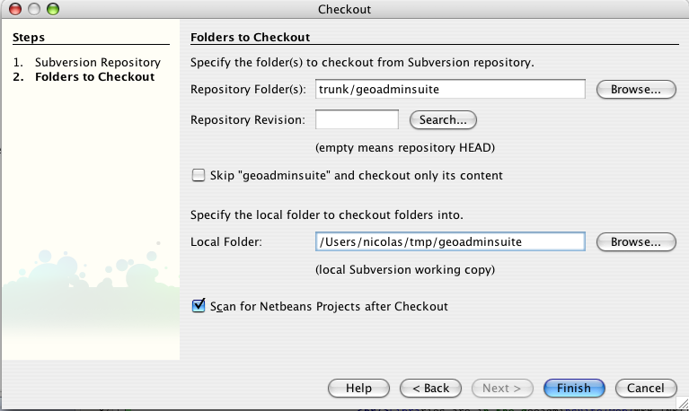

Install from sources
Deploy and run War file
Configure application
Introduction
GeoAdminSuite is a non distributed Java EE application (JSP 2.1, Servlets 2.5) requiring a Servlet/JSP engine to run.
It can also be run with NetBeans Java IDE, using the embeded Tomcat server.
GeoAdminSuite uses MapServer as map engine. Running MapServer as a CGI program requires that
a Web Server is installed locally (Apache for instance).
Running GeoAdminSuite locally requires the following steps:
- Get and install MapServer (CGI). Write down the mapserv CGI address (probably something like: http://localhost/cgi-bin/mapserv). It will be used later on during configuration.
- Build and run Webapp with NetBeans OR
- Deploy GAS webapp in a servlet engine :
- Configure the webapp
- Launch/test: Point your browser to http://localhost:[port]/geoadminsuite/ where
[port] is the port number your servlet engine is running on.
Ex. with NetBeans: http://localhost:8084/geoadminsuite/
How to install GeoAdminSuite from sources ?
The GAS sources can be managed with an Java IDE like Netbeans, Eclipse or Intellij IDEA. It allows to compile, debug and run GAS easily.
GAS project requires Maven project management environment to be installed,
but note that GAS itself IS NOT a Maven project
Maven is required to get libraries GAS depends on from externam repositories.
Netbeans comes with an embeded Tomcat server, suitable to run GeoAdminSuite webapp directly from Netbeans. This is the easiest way to deploy and run GeoAdminSuite.
- Download and install NetBeans 6
- Download and install Maven 2
- Launch NetBeans and go to Versionning -> Suberversion -> Checkout,
Enter the GeoAdminSuite SVN repository URL:
ttp://geoadminsuite.googlecode.com/svn/trunk/
-
Click Next, Browse repository folder to choose trunk folder:
-
Choose local folder to get a copy of GeoAdminSuite, Click Finish:
 - Create a new NetBeans project, choosing web project with existing sources:
- Fill in required information by browsing geoadminsuite folder that was created
at the previous step.
Sources are located in the geoadminsuite/src/java folder AND geoadminsuite/src/resources folder
Libraries are locatedin the geoadminsuite/web/WEB-INF/lib folder
Give project a name: geoadminsuite
- Click Finish
-
Find your project name in the Projects tab of the left panel, right-click on it and select Properties.
In the Build/Packaging section, add scripts/mapfish/** in the Exclude From WAR File text field:
- Build the project. It will create a geoadminsuite/dist/geoadminsuite.war file. This file can be used to deploy GeoAdminSuite on Servlet engines (Jetty, Tomcat, etc.)
- Run the project (hit F6 key, or Run -> Run Main Project menu). The default Web browser should open and display the GeoAdminSuite Welcome page.
How to deploy and run GeoAdminSuite war file ?
Deploy with Jetty
- Download and install Jetty
- Download gas.war and copy/move it to <jetty folder>/webapps/ and extract it into a "gas" folder
- Run Jetty:
./jetty.sh start
-
Change "jetty/webapps/gas/msFiles/tmpMaps" folder permissions to be writable by the MapServer process, for instance:
chmod a+w /home/toto/bin/jetty/webapps/msFiles/tmpMaps
- Configure the geoadminsuite Webapp
- Restart Jetty
- Test the application
Deploy with Tomcat
- Download and install Tomcat
- Download gas.war and copy/move it to <tomcat folder>/webapps/
- Follow Tomcat doc to deploy geoadminsuite webapp
-
Change "<tomcat deployment folder>/webapps/gas/msFiles/tmpMaps" folder permissions to be writable by the MapServer process, for instance:
chmod a+w [tomcat webapps folder]/gas/msFiles/tmpMaps
- Configure the geoadminsuite Webapp
- Restart Tomcat
- Test the application (port number may differ. Check Tomcat config)
How to configure GeoAdminSuite Webapp ?
Before using GeoAdminSuite, the webapp must be configured by setting some parameters
in properties files.
GeoAdminSuite Properties files are located at:
geoadminsuite/src/resources/org/geogurus/gas/resources
in the source tree, and at:
geoadminsuite/WEB-INF/classes/org/geogurus/gas/resources
in the deployed webapp.
- geonline.properties: contains path to mapserv cgi programs, postgis programs and sets times for automatic files deletion. Some parameters are not used (CUT_OBJECT_COORDINATES for instance)
- serverlist.properties: contains list of predefined datasources. These can be PostGIS or Oracle databases, folders containing geographic files (TIFF, ECW, shapefiles), or folders containing MapServer mapfiles.
- symbology.properties: contains definitions for GeoAdminSuite symbologies
To configure GeoAdminSuite, there are 2 options:
- Use the GeoAdminSuite admin page: /geoadminsuite/admin.jsp. Sets the required values and test configuration. (Note: these values are not saved into properties files)
- Edit properties files and sets values, as described in the following table.
relaunch the webapp after the files are saved.
| geonline.properties | |
| Property | Expected value |
|---|---|
| WAITIMAGE | the absolute URL to find an image that kaboum displays when the applet is working
Ex: http://localhost:8084/GeoAdminSuite/images/earth.gif |
| MAPSERVERURL | the absolute URL to the mapserver CGI program Ex: http://localhost/cgi-bin/mapserv |
| SHP2PGSQL | the FULL path to PostGIS shp2pgsql program Ex: /usr/local/pgsql/bin/shp2pgsql |
| PGSQL2SHP | the FULL path to pgsql2shp program Ex: /usr/local/pgsql/bin/pgsql2shp |
| MAPSERVER_CLASS_LIMIT | The maximun number of classes mapserver can generate (compilation-dependant) Ex: 250 |
| tempMapsDeletionPeriod | the time, in second, to wait before deleting old user-specific mapfiles Ex: 86400 |
| tempMapsDeletionTimeRange | the time range, in second, before considering a user-specific mapfile is too old.
for instante, of both paramters are set to 86400 seconds, it means that
each 24 hours, user-specific mapfiles older than 24 hours from the current
date will be deleted. Ex: 86400 |
| GeoAdminSuite_DB_REPROJ | The database used to manage reprojections.
This database must be a recent PostGIS database version (>= 1.2)
host,port,db,user,pwd Ex: localhost,5432,test,myusername,mypwd |
| serverlist.properties | |
| Property | Expected value |
| host<id> |
A valid host definition:
##################################################################################################
# This file Contains definition for available hosts containing geographic information on the
# running server.
# Supported servers are:
# - a folder (must be accessible by the server running the GeoAdminSuite application)
# - a postgis database
# - an oracle database
#
# Syntax:
# each host must be define with a key=value line
# key can be any unique word. Identical keys will be grouped together into the
# same tree node in the GeoAdminSuite GUI
# value must contain 8 fields separated with comma (,) with different values,
# according to the host type:
#
# if host type is a folder:
#
# o the first field is the name of the host (computer)
# o the second field is the path where geographic information will searched. this path
# must be accessible by the server running the GeoAdminSuite.
# CAUTION: IF PATH CONTAINS "\" CHARACTERS (Windows), THEY MUST BE ESCAPED (BY REPEATING THE "\").
# AS "\" IS A SPECIAL CHARACTER FOR PROPERTIES FILE. Ex: c:\\tmp\\shapes
# o the third, fourth and fifth fields must be the "null" keyword
# o the sixth field must be the "null" keyword
# o the seventh field tells if given folder should be recursively scanned
# ("on" to enable, any other value to disable)
# o the eighth field must be "folder" keyword
#
# if host type is a postgis database:
#
# o the first field is the name of the host (computer)
# o the second field must be the null keyword
# o the third field is the value of the port on which PostgreSQL is running,
# o the fourth field is the name of the postgresql user used for the connection
# o the fifth field is the password of the postgresql user used for the connection
# o the sixth field is the name of the postgresql template DB used for the connection
# o the seventh field (recurse folder) is discarded (may be the "null" keyword for instance)
# o the eighth field must be the "pg" keyword
# if host type is a Oracle database:
#
# o the first field is the name of the host (computer)
# o the second field must be the null keyword
# o the third field is the value of the port on which oracle is running,
# o the fourth field is the name of the oracle user used for the connection
# o the fifth field is the password of the oracle user used for the connection
# o the sixth field is the Oracle instance name
# o the seventh field (recurse folder) is discarded (may be the "null" keyword for instance)
# o the eighth field must be the "Oracle" keyword
#
##
|
GAS application can be translated into other languages by managing Java I18N files located at:
geoadminsuite/src/resources/org/geogurus/gas/resources/ApplicationResource_*.properties
in the source tree, and at:
geoadminsuite/WEB-INF/classes/org/geogurus/gas/resources
in the deployed webapp.
Create a new file for the language to add and provide translation values into the file. For instance, to add german language support, creates a ApplicationResource_de.properties, copy keys from one of the existing ApplicationResource file, paste them into the new file and translate the values corresponding to each key.